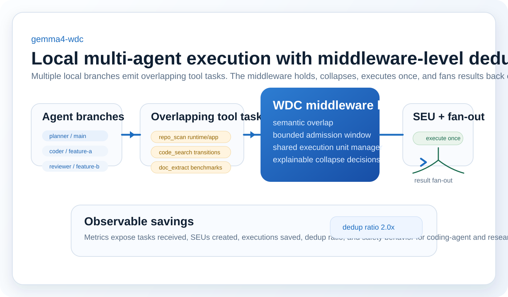
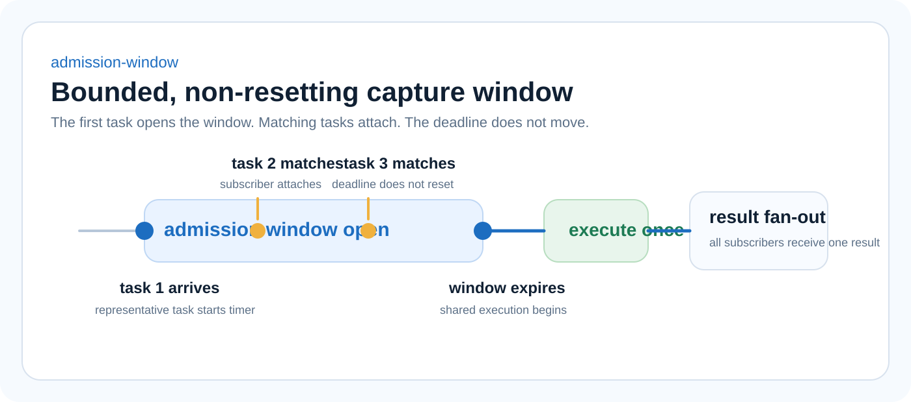

Animated Walkthrough
Fast conceptual pass

Best for understanding admission-window capture, subscriber attachment, and result fan-out in a few seconds.
Laptop-First Local Middleware
gemma4-wdc is a laptop-first prototype of a local, offline multi-agent system where Gemma-family agents emit overlapping SQL, API, document, repo-scan, and research tasks, and a WDC-style middleware layer collapses duplicate backend work before execution.
Consumer-hardware proof of concept. Simulation-first by default. Hybrid mode is optional.

See the Runtime Flow
The walkthrough explains the core state transitions quickly. The live capture shows the actual dashboard and runtime in motion on a laptop-scale coding-agent scenario.
Animated Walkthrough
Best for understanding admission-window capture, subscriber attachment, and result fan-out in a few seconds.
Live Local Demo
Real dashboard capture using the coding-agent overlap flow with sequential task submission so the SEU lifecycle and metrics remain legible.
The animated walkthrough is the faster teaching tool. The live local demo is the credibility layer: the task stream, admission window, subscriber counts, shared execution, and metrics update are all coming from the running system.
Scenario: coding-agent overlap
Highlights: admission window opens once, matching tasks attach, one SEU executes, metrics record saved executions
The Bottleneck
Repo scans, code search, SQL, document extraction, retrieval, and API tasks often recur across neighboring branches even when the underlying backend work is materially the same.
On modest hardware, duplicated downstream work hurts faster. Gemma4-WDC frames this as a runtime bottleneck, not just a prompt-quality issue.
Core Idea

Architecture
Simulation mode is the default. Multiple agents are lightweight or simulated, one local FastAPI backend manages SEUs, and lightweight tool backends make the runtime behavior obvious on a laptop.
Hybrid mode is optional and allows one real local model node to coexist with simulated agents without turning the project into a hardware arms race.

One central local runtime holds tasks briefly, groups compatible work into shared execution units, and exposes the whole decision path.
Coding-Agent Demo
Planner, coder, and reviewer branches ask overlapping questions about where the runtime transitions shared execution units from pending to executing. Gemma4-WDC collapses those repo scans into one SEU while a benchmark-oriented code search stays separate.
This is the right scale for a credible consumer-hardware demo: one laptop, branch-heavy local agents, and backend work that clearly should not be repeated.

The flagship use case: branch-heavy coding-agent workflows that would otherwise repeat the same repo-understanding work.
Benchmarks
These are local-harness numbers from mock or lightweight executors. The goal is to make shared execution behavior visible, not to imply cluster-scale throughput.
The harness compares naive execution against deduplicated execution for coding repo scans, document overlap, API overlap, and safety counterexamples. These are prototype numbers from mock or lightweight backends and are labeled accordingly.
| Scenario | Tasks | Execs | Saved | Dedup |
|---|---|---|---|---|
| coding_repo_scan | 4 | 2 | 2 | 2.0x |
| document_research | 3 | 2 | 1 | 1.5x |
| api_fanout | 3 | 2 | 1 | 1.5x |
| false_collapse_safety | 4 | 4 | 0 | 1.0x |

The current chart emphasizes the same numbers as the table: modest, interpretable savings and a safety case that stays separate.
Laptop-First Mode
Multiple lightweight agents generate realistic tool tasks so the middleware value is legible without a real local model.
One real local Gemma-compatible adapter can join while the rest of the system stays lightweight and laptop-friendly.
This is a single-machine proof of concept, not a claim of full cluster throughput or many concurrent heavy model instances.
Roadmap
Make the one-node hybrid adapter easier to attach for local Gemma-family task generation or summarization.
Add richer task logs, why-collapsed annotations, and more explicit safety reasoning in the dashboard.
Only after the laptop-scale thesis is stronger should the project expand into distributed coordination and heterogeneous nodes.
{kind=link}